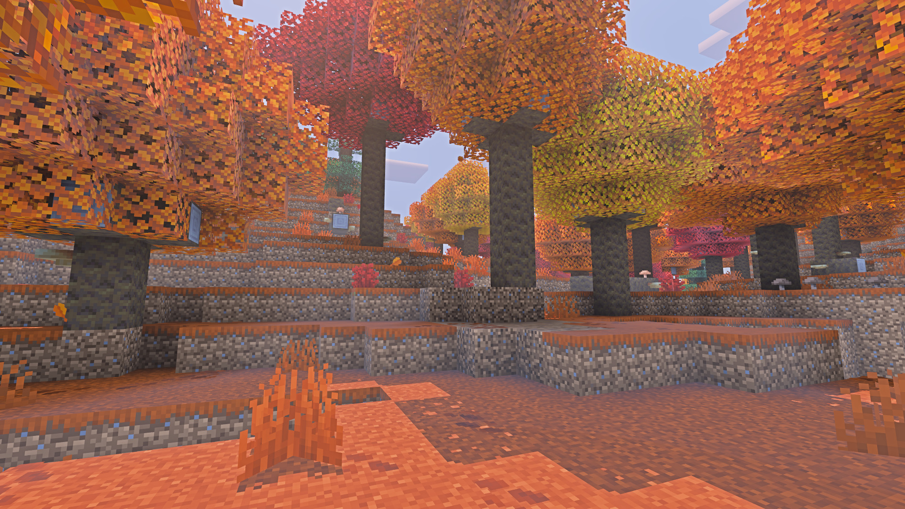
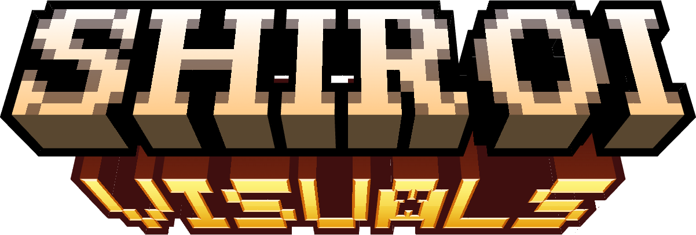
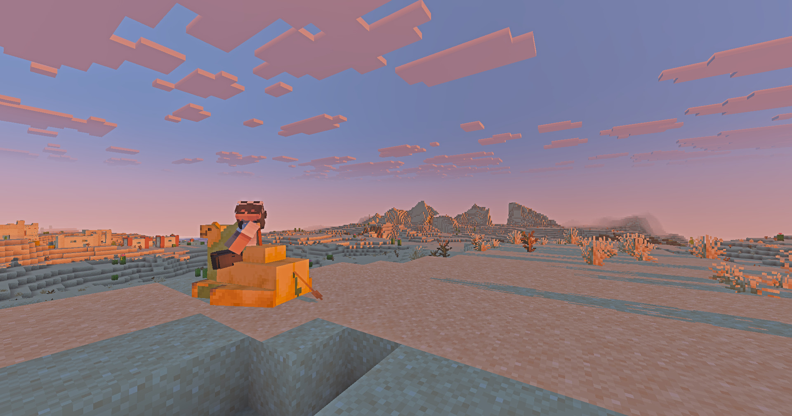

Uma experiencia completa para o Java Edition, deixei seu mundo mais bonito sem deixar de parecer... Ah.. Vanilla?
Escolha o preset e veja no jogo

Como instalar
Instale o Iris para o Minecraft Java 26.3.
Coloque o arquivo .zip na pasta
shaderpacks, sem extrair.No jogo, abra Opcoes, Video, Shader Packs e escolha Shiroi Visuals V10.3.
Escolha o preset no menu do shader. O padrao e o Medio.